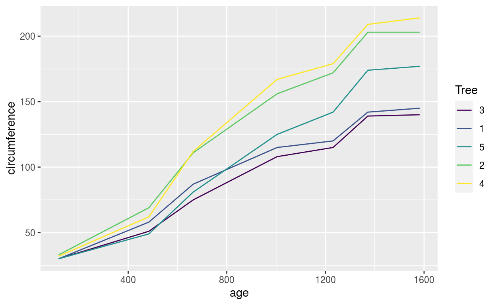
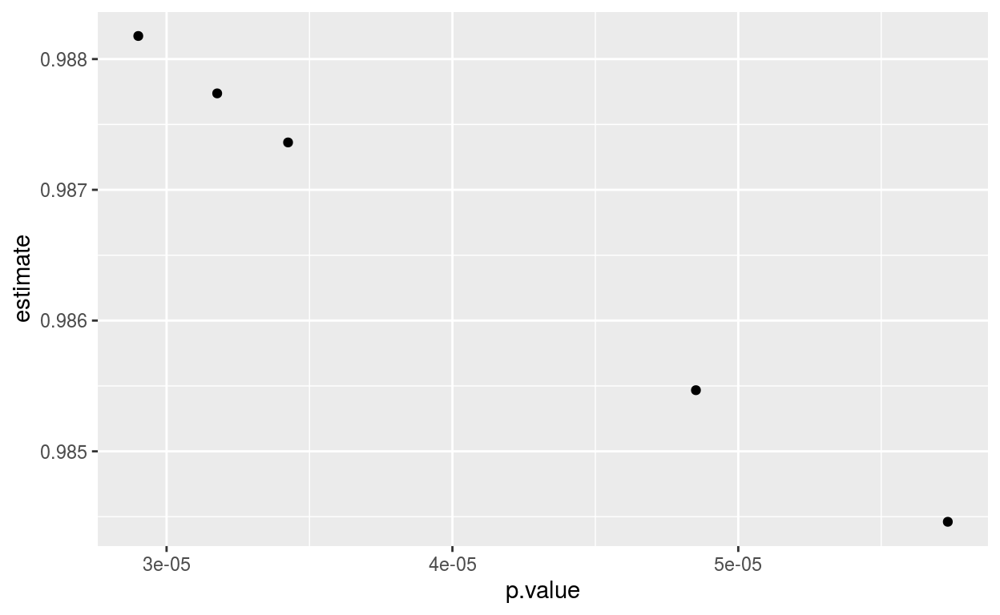

Introduction
R is a rich software language for “programming with data” to quote the chief designer John Chambers (Chambers 1998) of the precursor and inspiration for R - the S programming language.
While diverse in its applications, R is based on a few unifying design principles that allows one to separate the forest from the trees in developing R software for solving a problem.
A useful summary of these principles for understanding the behavior of R code is captured by the memorable slogans:
Everything in R is an object.
— John Chambers
Everything that happens in R is the result of a function call.
— John Chambers
Names have objects, objects don’t have names.
— Hadley Wickham
We will refer to these principles as the deep truths of R.
Although these principles are omnipresent in R, they are reaffirmed and take center stage in the jump from “base R” (the original, core R language) to “modern R” as formalized by the Tidyverse ecosystem of packages.1
The first of these principles is arguably the most important to initiate an understanding of the full trilogy, and we begin our discussion there.
Everything in R is an Object
Every entity that gets used in R is an object of some kind, and all computations involve constructing and manipulating objects in some form.
However, the word “object” has many connotations in computer programming, particularly in relation to “object-oriented programming.” Hence it is crucial to recognize the more general meaning of objects in R.
“Everything in R is an object” in the sense of being a data structure that can be manipulated and analyzed. As Chambers (1998) writes, an object in R is a “dynamically created, self-describing container for data.”
When complemented with the fact that R is a language designed to “program with data,” this means that everything in R is analyzable as a data. This is arguably what fundamentally distinguishes R from other languages - it achieves the capabilities of general purpose programming language through a paradigm that is centered around data structures and analysis of those structures.
To unpack the Chambers defintion of R objects, the two distinct ideas he raises are “containers of data” and “self-describing.”
These map directly to the intrinsic attributes that are associated to every R object. Every object in R has (1) a mode or type and (2) a length. These are intrinsic attributes of every R object.
The fact every object has a length means they are vector-like in some fashion and can be approached as a data structure, e.g., we can in principle access, manipulate, and analyze any R object through common data techniques, e.g., the data underlying an object
xcan be examined via a subsetting operationx[[i]]forifrom1:length(x).While this kind of data analysis and manipulation is immediate and natural in the case of numerical vectors, it can more novel and revealing when applied to different R objects.
Not all objects subsetted like vectors despite being data containers with a length. function objects are notorious in this respect:
f[[1]]
Error in f[[1]] : object of type 'closure' is not subsettableWe can however extract the underlying data via of a function object “as a container of data” through alternative function calls:
In addition to being containers of data, R objects are “self describing” in the Chambers definition. The key challenge with data structures of any form is to have a guide for interpreting what the underlying data mean.
-The first clue as to the data meaning is the “base type” as given by typeof().
- Of course, the interpretation of this data depend on the object type. The mode or type separates (1) data objects from (2) language objects. The data objects have modes that include
numericinteger,character,logical, etc, whereas the language objects includefunction,call,expression, etc.
Whereas the mode attribute was central to R’s precursor language S, object types are a more common to distinguish different families of objects. The type of an object we will reference as its base type (to distinguish from what we will later discuss as the object’s “class,” which is an enrichment of the object’s base type).
There are a fixed set of 25 types defined by core-R. They are listed below, categorized by their distinct data interpretation.
Vectors include types
NULL,logical,integer,double,complex,character,list, andraw.Functions include types
closure(regular R functions),special(internal functions), andbuiltin(primitive functions).Environments have type
environment.The
S4type is used for S4 classes that don’t inherit from an existing base type.Language components include
symbol(aka name),language(usually called calls), andpairlist(used for function arguments) types.[1] "symbol"[1] "language"[1] "pairlist"expressionis a special purpose type that’s only returned byparse()andexpression(). Expressions are generally not needed in user code.The remaining types are esoteric and rarely seen in R. They are important primarily for connections to C code:
externalptr,weakref,bytecode,promise,..., andany.
All other attributes of an R object beyond its base type are a set of metadata associated with the object. This metadata is attached to the main object but subordinate in status. These attributes can be found en masse through a call to attributes()
attributes(1:10)
NULLIn this case the object has no additional attributes beyond its intrinsic attributes and hence the call returns a
NULLvalue.More generally, attributes are represented as a named list in R and can have value
NULL
An attribute that is often helpful for interpreting an object’s data is the object’s
class. Theclassattribute is used by R’s native object oriented system - the S3 system. Not all objects have theclassattribute, and those that do we can are designated “OO objects” (short for “object-oriented”). This can be confusing in lieu of the fact (and discussed above) that everything in R is an object!However as Wikham writes (Advanced R, page 291), “while everything is an object, not everything is object-oriented.” Hence the objects in R will come in two flavors that we can designate base objects and OO objects.

The type of an object we will reference as its base type - this is because irrespective of whether an object is a base object or an OO object, its underlying type belongs to a pre-defined set established by R-core that was described above.
Hence even OO objects have a base type. What distinguishes OO types is that they will have at least an additional “class” attribute. The class attribute can then be seen as an extension of the functionality of its underlying base type.
As an aside - the S language, which is the basis for the core R language - was developed before the design of an OOP (Object Oriented Programming) system that introduced formal OO capabilities to the language. The original system - the S3 system - remains the simplest, most flexible, and most popular system used for R programming and package development. We focus attention on it here. Hence the simplest OO objects are S3 objects - e.g., a base type object with at least a
classattribute.
To appreciate the S3 system, it is useful to observe that R is at heart a functional programming language, e.g., functions are first-class functions. This means that objects in R are functions just like any other object, e.g., they are just another data structure. It is not surprising then that the S3 system brings OOP capabilities through functions the thus adopts the OOP through a paradigm of generic functions, where the different methods for manipulating different classes of objects that achieve a common functionality are associated with a generic function. For example the print() function behaves differently
$x
[1] 1 2
$y
[1] 3 4attributes(some_data)
$names
[1] "x" "y"class(some_data) <- c("data.frame")
attributes(some_data)$row.names = c(1L,2L)
some_data
x y
1 1 3
2 2 4## of course there are convenience functions for creating a data frame from a list that automate this process.
as.data.frame(list(x = c(1,2), y = c(3,4)))
x y
1 1 3
2 2 4How did this happen, e.g., the output of the list data structure change depending on the class attribute. The magic arises because the function print is actually a generic. As Hadley describes it (p. 300): "The generic is a middleman: its job is to define the interface (i.e., the arguments) then find the right implementation for the job. The implementation for a specific class is called a method, and the generic finds that method by performing method dispatch.
The fact that print is a generic is revealed by its body, which is a single line that calls UseMethod.
body(print)
UseMethod("print")The UseMethod function inspects the class attribute of the first argument and seeks the appropriate method (function). The methods are named according to the generic.class convention. Hence printing the data frame above should seek a method by the name of print.data.frame. To check this behavior, we can use the helper function sloop::s3_dispatch()
sloop::s3_dispatch(print(some_data))
=> print.data.frame
* print.defaultThe “=>” in the output indicates the method that is called, confirming our characterization of the method dispatch process. A more thorough examination of method dispatch is given in Chapter 13 of Advanced R.
An object can have multiple classes, e.g., the class attribute takes the value of a character vector. For example, a tibble is an enhanced data frame, and has 3 classes. Lets convert our data into a tibble:
# A tibble: 2 x 2
x y
* <dbl> <dbl>
1 1 3
2 2 4sloop::s3_dispatch(print(some_data))
print.tbl_df
=> print.tbl
* print.data.frame
* print.defaultIn the case of objects with multiple classes, method dispatch first seeks a method for the first class, and then the second class, and so forth.
One useful feature of tibbles is that they readily support list columns. Data frames and tibbles are lists of equal length vectors.

The vectors contained inside of a data frame or tibble are typically atomic vectors.

However recall lists are also vectors (so called recursive vectors as discussed above). Thus if instead of an atomic vector, a tibble held a list as a column, this would give rise to (an appropriately called) list column

And because lists are recursive, the elements of a list column can be other lists, e.g, tibbles themselves!

This enables some very powerful workflows with data and empirical modeling. As an example, suppose we want to break a large data set into multiple sub-data sets by split according to the values of a group variable, and run a regression among the remaining variables for each group separately. How can we examine the pattern of values of the regression coefficient among the groups.
The key function to enable list columns that are populated with tibbles is nest(). In particular as Hadley explains, “Pass nest() the names of the columns to put into each individual tibble. nest() will create one row for each unique value of the remaining variables.” (determine citation)
Consider the example from the tidymodels tutorials:
library(tidymodels)
data(Orange)
Orange <- as_tibble(Orange)
Orange
# A tibble: 35 x 3
Tree age circumference
<ord> <dbl> <dbl>
1 1 118 30
2 1 484 58
3 1 664 87
4 1 1004 115
5 1 1231 120
6 1 1372 142
7 1 1582 145
8 2 118 33
9 2 484 69
10 2 664 111
# … with 25 more rowsThere is clear correlation between age and circumference for each class of tree.
cor(Orange$age, Orange$circumference)
[1] 0.9135189ggplot(Orange) + geom_line(aes(x = age, y = circumference, color = Tree))

Orange %>% group_by(Tree) %>% summarize(correlation = cor(circumference,age)) %>% arrange(Tree)
# A tibble: 5 x 2
Tree correlation
<ord> <dbl>
1 3 0.988
2 1 0.985
3 5 0.988
4 2 0.987
5 4 0.984Now if we wish to examine the statistical properties of the bivariate correlation for each group, the task becomes more complicated. We can examine a proper correlation test at the aggregate level
cor_agg <- cor.test(Orange$age,Orange$circumference)
cor_agg
Pearson's product-moment correlation
data: Orange$age and Orange$circumference
t = 12.9, df = 33, p-value = 1.931e-14
alternative hypothesis: true correlation is not equal to 0
95 percent confidence interval:
0.8342364 0.9557955
sample estimates:
cor
0.9135189 cor_agg %>% class()
[1] "htest"The output takes the form of a rich collection of information that is a data structure of class htest. To convert this information into consumable data for analyses, we will “tidy” it (a running themse in the “R for Data Science” book and a key principle that unifies the package in the tidyverse.)
We tidy the data with the tidy() function:
tidy(cor_agg)
# A tibble: 1 x 8
estimate statistic p.value parameter conf.low conf.high method
<dbl> <dbl> <dbl> <int> <dbl> <dbl> <chr>
1 0.914 12.9 1.93e-14 33 0.834 0.956 Pearson's …
# … with 1 more variable: alternative <chr>which produces a single row (one observation - in this case a single test) with each variable/dimension of the test being a column.
We can use this workflow to generate a tidy data set on the statistical properties of the correlation across the subgroups of our data. This is enabled via the nest-map-unnest pattern.
First we nest the data to create a list column:
Orange %>% nest(data = c(circumference, age))
# A tibble: 5 x 2
Tree data
<ord> <list>
1 1 <tibble [7 × 2]>
2 2 <tibble [7 × 2]>
3 3 <tibble [7 × 2]>
4 4 <tibble [7 × 2]>
5 5 <tibble [7 × 2]>We can add to the pipeline by mapping the correlation test across each tibble in the list column
Orange %>% nest(data = c(circumference, age)) %>%
mutate(test = map(data, ~cor.test(.$age, .$circumference)))
# A tibble: 5 x 3
Tree data test
<ord> <list> <list>
1 1 <tibble [7 × 2]> <htest>
2 2 <tibble [7 × 2]> <htest>
3 3 <tibble [7 × 2]> <htest>
4 4 <tibble [7 × 2]> <htest>
5 5 <tibble [7 × 2]> <htest>Notice this produces another list column consisting of elements of the htest class. Now we need to tidy each one, which will give us a list column of tibbles:
Orange %>% nest(data = c(circumference, age)) %>%
mutate(test =
map(data, ~cor.test(.$age, .$circumference))) %>%
mutate(testdat = map(test,tidy))
# A tibble: 5 x 4
Tree data test testdat
<ord> <list> <list> <list>
1 1 <tibble [7 × 2]> <htest> <tibble [1 × 8]>
2 2 <tibble [7 × 2]> <htest> <tibble [1 × 8]>
3 3 <tibble [7 × 2]> <htest> <tibble [1 × 8]>
4 4 <tibble [7 × 2]> <htest> <tibble [1 × 8]>
5 5 <tibble [7 × 2]> <htest> <tibble [1 × 8]>If we inspect an element of the testdat variable, we will see a tidy data frame associated to the correlation test applied to a group of the data:
(Orange %>% nest(data = c(circumference, age)) %>%
mutate(test =
map(data, ~cor.test(.$age, .$circumference))) %>%
mutate(testdat = map(test,tidy)))$testdat[[1]]
# A tibble: 1 x 8
estimate statistic p.value parameter conf.low conf.high method
<dbl> <dbl> <dbl> <int> <dbl> <dbl> <chr>
1 0.985 13.0 4.85e-5 5 0.901 0.998 Pearson's …
# … with 1 more variable: alternative <chr>ggplot(cortestDat) + geom_point(aes(x = p.value, y = estimate))

S3 Atomic Vectors
Atomic vectors also have S3 variants. Base R includes definitions for several important S3 atomic vectors to represent:
- Categorical data using factor vectors
- Dates using Date vectors
- Date_times using POSIXct vectors
- Durations using difftime vectors
These S3 vectors (also called augmented vectors to signal their augmented attributes relative to their base vector type) and their connections to base type vectors are pictured below:

Here we discuss factor vectors, which are built on top of integer vectors that can take one of a pre-defined set of values. A factor vector is defined on top of an integer vector through two additional attributes: (1): a class of “factor” which distinguishes factors from standard integer vectors, and (2): levels which are a set of allowed values.
[1] a b, c d
Levels: a b, c dtypeof(x)
[1] "integer"unclass(x)
[1] 1 2 3 4
attr(,"levels")
[1] "a" "b," "c" "d" R has functionality that allows you to immediately tabulate a factor vector based on the set of potential levels (as opposed to the observed levels)
Ordered factors are a slightly different stripe of factors (an added class ordered) that orders the factor levels in a meaningful way that can be helpful for visualizations or modeling. We have already seen an example above in the case of the Orange data set:
Orange$Tree
[1] 1 1 1 1 1 1 1 2 2 2 2 2 2 2 3 3 3 3 3 3 3 4 4 4 4 4 4 4 5 5 5 5 5
[34] 5 5
Levels: 3 < 1 < 5 < 2 < 4class(Orange$Tree)
[1] "ordered" "factor" which explains how Tree was arranged in the summary tables (based on this order).
When we import data we will generally want to convert character vectors in the data set into factors. The following workflow that we illustrate with a data set on European automobile sales and product characteristics leverages the across() functionality from dplyr 1.0.0 to achieve these purposes and provides useful summaries.
carData <- read_csv("../../data/total.csv")
glimpse(carData)
Rows: 139,307
Columns: 90
$ brand <chr> "alfa_romeo", "alfa_romeo", "alfa_romeo"…
$ continent <dbl> 3, 3, 3, 3, 3, 3, 3, 3, 3, 3, 3, 3, 3, 3…
$ bodystyle <chr> "com", "com", "com", "com", "com", "com"…
$ dup <dbl> 7834, 10302, 12393, 29626, 12797, 1868, …
$ year <dbl> 2011, 2010, 2013, 2014, 2012, 2016, 2012…
$ month <dbl> 8, 9, 3, 10, 6, 7, 2, 5, 10, 11, 3, 6, 6…
$ time <dbl> 20, 9, 39, 58, 30, 79, 26, 41, 34, 23, 8…
$ muninumber <dbl> 1657, 1102, 239, 1201, 213, 1422, 220, 1…
$ market_ids <dbl> 708, 168, 1263, 1823, 834, 2682, 840, 14…
$ sales <dbl> 1, 3, 1, 2, 4, 1, 3, 1, 1, 1, 1, 1, 1, 1…
$ shares <dbl> 1.467567e-04, 4.549936e-05, 3.746721e-04…
$ product_ids <dbl> 4, 5, 4, 5, 4, 4, 4, 4, 4, 5, 3, 3, 4, 3…
$ car_ids <dbl> 20, 28, 20, 26, 24, 19, 17, 20, 17, 28, …
$ firm_ids <dbl> 1, 1, 1, 1, 1, 1, 1, 1, 1, 1, 1, 1, 1, 1…
$ nvals <dbl> 6, 57, 11, 50, 81, 16, 73, 46, 3, 73, 7,…
$ numbersold <dbl> 1, 1, 1, 1, 1, 1, 1, 1, 1, 1, 1, 1, 1, 1…
$ station_network <dbl> 0, 6, 1, 118, 3, 1, 10, 1, 1, 1, 1, 2, 1…
$ muni <chr> "skaun", "sandnes", "hurdal", "bergen", …
$ transmission <chr> "man", "man", "man", "man", "aut", "man"…
$ prices <dbl> 3.499, 2.499, 3.399, 1.899, 3.549, 3.199…
$ trans <dbl> 0, 0, 0, 0, 1, 0, 0, 0, 0, 0, 1, 1, 0, 1…
$ ev <dbl> 0, 0, 0, 0, 0, 0, 0, 0, 0, 0, 0, 0, 0, 0…
$ length <dbl> 0.435, 0.406, 0.435, 0.406, 0.435, 0.435…
$ power_over_weight <dbl> 0.13178295, 0.09633028, 0.13178295, 0.07…
$ inversefuelecon <dbl> 0.5447272, 0.5621190, 0.5447272, 0.86750…
$ county <chr> "trÃ\u0083Â\u0083Ã\u0082¸ndelag", "roga…
$ model <chr> "giulietta", "mito", "giulietta", "mito"…
$ drivetrain <chr> "2wd", "2wd", "2wd", "2wd", "2wd", "2wd"…
$ fueltype <chr> "gasoline", "gasoline", "gasoline", "gas…
$ displacement <dbl> 1368, 1368, 1368, 875, 1368, 1368, 1368,…
$ effect_kw <dbl> 125, 77, 125, 62, 125, 110, 88, 125, 88,…
$ emissions <dbl> 0, 0, 134, 98, 121, 127, 149, 134, 149, …
$ latitude <dbl> 63.30867, 58.85233, 60.43157, 60.37877, …
$ longitude <dbl> 10.083460, 5.750746, 11.065035, 5.321423…
$ land <dbl> 213.05, 285.55, 260.98, 445.00, 161.72, …
$ freshwater <dbl> 11.12, 19.06, 23.98, 19.70, 3.81, 66.66,…
$ totalarea <dbl> 224.17, 304.61, 284.96, 464.70, 165.53, …
$ hh <dbl> 2653, 27025, 1201, 125929, 11846, 931, 2…
$ medianincome <dbl> 585497.8, 561638.1, 498247.4, 507902.6, …
$ population <dbl> 6814.0, 65935.0, 2669.0, 274379.0, 29191…
$ diesel <dbl> 16.10978, 14.35810, 16.29313, 15.71055, …
$ gasoline <dbl> 14.06, 12.45, 14.65, 14.60, 14.56, 13.88…
$ cpi <dbl> 0.8727615, 0.8671065, 0.8991517, 0.92931…
$ mintemp <dbl> 5.6, 2.1, -23.3, 1.4, 2.1, 8.2, -18.5, -…
$ maxtemp <dbl> 24.0, 20.1, 7.5, 19.5, 22.5, 29.9, 12.0,…
$ electricity <dbl> 364.0284, 443.5326, 376.7662, 245.6011, …
$ parkingfee <dbl> 0, 0, 0, 0, 0, 0, 0, 0, 0, 0, 0, 0, 0, 0…
$ numberofdoors <dbl> 5, 3, 5, 3, 5, 5, 5, 5, 5, 3, 4, 4, 5, 4…
$ numberofseats <dbl> 5, 5, 5, 5, 5, 5, 5, 5, 5, 5, 5, 5, 5, 5…
$ weight <dbl> 1290, 1090, 1290, 1130, 1290, 1280, 1280…
$ fueleconomy <dbl> 0.58, 0.57, 0.58, 0.42, 0.52, 0.56, 0.64…
$ numberofcylinders <dbl> 4, 4, 4, 2, 4, 4, 4, 4, 4, 4, 4, 4, 4, 4…
$ effect_hp <dbl> 170, 105, 170, 85, 170, 150, 120, 170, 1…
$ range <dbl> 0, 0, 0, 0, 0, 0, 0, 0, 0, 0, 0, 0, 0, 0…
$ popdensity <dbl> 31.983103, 230.905270, 10.226837, 616.58…
$ price_over_income <dbl> 0.5976111, 0.4449485, 0.6821913, 0.37389…
$ n_fuel <dbl> 3, 3, 3, 3, 3, 3, 3, 3, 3, 3, 3, 3, 2, 2…
$ n_bodystyle <dbl> 2, 2, 2, 2, 2, 2, 2, 2, 2, 2, 7, 7, 2, 7…
$ n_drivetrain <dbl> 1, 1, 1, 1, 1, 1, 1, 1, 1, 1, 2, 2, 1, 1…
$ n_transmission <dbl> 1, 1, 1, 1, 2, 1, 1, 1, 1, 1, 2, 2, 1, 2…
$ n_brand <dbl> 1, 1, 1, 1, 1, 1, 1, 1, 1, 1, 1, 1, 1, 1…
$ n_model <dbl> 175, 267, 175, 267, 175, 175, 175, 175, …
$ n_county <dbl> 15, 11, 1, 6, 1, 12, 1, 11, 17, 3, 3, 7,…
$ n_numberofdoors <dbl> 4, 2, 4, 2, 4, 4, 4, 4, 4, 2, 3, 3, 4, 3…
$ n_numberofseats <dbl> 3, 3, 3, 3, 3, 3, 3, 3, 3, 3, 3, 3, 3, 3…
$ mintemp_dbev <dbl> 0, 0, 0, 0, 0, 0, 0, 0, 0, 0, 0, 0, 0, 0…
$ maxtemp_dbev <dbl> 0, 0, 0, 0, 0, 0, 0, 0, 0, 0, 0, 0, 0, 0…
$ electricity_dbev <dbl> 0, 0, 0, 0, 0, 0, 0, 0, 0, 0, 0, 0, 0, 0…
$ parkingfee_dbev <dbl> 0, 0, 0, 0, 0, 0, 0, 0, 0, 0, 0, 0, 0, 0…
$ range_dbev <dbl> 0, 0, 0, 0, 0, 0, 0, 0, 0, 0, 0, 0, 0, 0…
$ msize <dbl> 44.21667, 450.41666, 20.01667, 2098.8167…
$ delta <dbl> -8.826588, -9.995170, -7.888710, -11.828…
$ evsn <dbl> 0, 0, 0, 0, 0, 0, 0, 0, 0, 0, 0, 0, 0, 0…
$ lnlength <dbl> -0.8324093, -0.9014022, -0.8324093, -0.9…
$ lndisplacement <dbl> 7.221105, 7.221105, 7.221105, 6.774224, …
$ lnpow <dbl> -2.026599, -2.339973, -2.026599, -2.5873…
$ lninv <dbl> -0.6074703, -0.5760418, -0.6074703, -0.1…
$ lnstation <dbl> 0.0000000, 1.7917595, 0.0000000, 4.77068…
$ lnevsn <dbl> 0, 0, 0, 0, 0, 0, 0, 0, 0, 0, 0, 0, 0, 0…
$ trend <dbl> 2, 1, 4, 5, 3, 7, 3, 4, 3, 2, 8, 8, 3, 8…
$ dummy <dbl> 0.4081760, 0.3011693, 0.3698604, 0.43076…
$ dummy2 <dbl> 526.5470, 328.2745, 477.1200, 486.7686, …
$ demand_instruments0 <dbl> 1, 0, 1, 0, 4, 3, 5, 4, 5, 5, 2, 2, 3, 1…
$ demand_instruments1 <dbl> 2, 2, 2, 0, 5, 5, 5, 5, 5, 5, 3, 3, 3, 3…
$ demand_instruments2 <dbl> 0, 1, 1, 0, 3, 3, 1, 3, 3, 1, 2, 2, 0, 2…
$ demand_instruments3 <dbl> 2, 2, 2, 0, 5, 5, 5, 5, 5, 5, 3, 3, 3, 3…
$ demand_instruments4 <dbl> 61, 12, 55, 17, 53, 42, 65, 52, 66, 64, …
$ demand_instruments5 <dbl> 75, 76, 77, 78, 71, 71, 73, 75, 70, 74, …
$ demand_instruments6 <dbl> 26, 53, 53, 54, 51, 51, 25, 51, 51, 25, …
$ demand_instruments7 <dbl> 79, 78, 79, 81, 76, 75, 75, 76, 75, 76, …Lets select which of the 90 variables are character columns:
carData %>% select(where(is.character)) %>%
glimpse()
Rows: 139,307
Columns: 8
$ brand <chr> "alfa_romeo", "alfa_romeo", "alfa_romeo", "alfa…
$ bodystyle <chr> "com", "com", "com", "com", "com", "com", "com"…
$ muni <chr> "skaun", "sandnes", "hurdal", "bergen", "ski", …
$ transmission <chr> "man", "man", "man", "man", "aut", "man", "man"…
$ county <chr> "trÃ\u0083Â\u0083Ã\u0082¸ndelag", "rogaland", …
$ model <chr> "giulietta", "mito", "giulietta", "mito", "giul…
$ drivetrain <chr> "2wd", "2wd", "2wd", "2wd", "2wd", "2wd", "2wd"…
$ fueltype <chr> "gasoline", "gasoline", "gasoline", "gasoline",…carData <- carData %>% mutate(across(c(year,month,time,muninumber,market_ids), as.factor)) %>%
mutate(across(where(is.character), as.factor))
carData %>% glimpse()
Rows: 139,307
Columns: 90
$ brand <fct> alfa_romeo, alfa_romeo, alfa_romeo, alfa…
$ continent <dbl> 3, 3, 3, 3, 3, 3, 3, 3, 3, 3, 3, 3, 3, 3…
$ bodystyle <fct> com, com, com, com, com, com, com, com, …
$ dup <dbl> 7834, 10302, 12393, 29626, 12797, 1868, …
$ year <fct> 2011, 2010, 2013, 2014, 2012, 2016, 2012…
$ month <fct> 8, 9, 3, 10, 6, 7, 2, 5, 10, 11, 3, 6, 6…
$ time <fct> 20, 9, 39, 58, 30, 79, 26, 41, 34, 23, 8…
$ muninumber <fct> 1657, 1102, 239, 1201, 213, 1422, 220, 1…
$ market_ids <fct> 708, 168, 1263, 1823, 834, 2682, 840, 14…
$ sales <dbl> 1, 3, 1, 2, 4, 1, 3, 1, 1, 1, 1, 1, 1, 1…
$ shares <dbl> 1.467567e-04, 4.549936e-05, 3.746721e-04…
$ product_ids <dbl> 4, 5, 4, 5, 4, 4, 4, 4, 4, 5, 3, 3, 4, 3…
$ car_ids <dbl> 20, 28, 20, 26, 24, 19, 17, 20, 17, 28, …
$ firm_ids <dbl> 1, 1, 1, 1, 1, 1, 1, 1, 1, 1, 1, 1, 1, 1…
$ nvals <dbl> 6, 57, 11, 50, 81, 16, 73, 46, 3, 73, 7,…
$ numbersold <dbl> 1, 1, 1, 1, 1, 1, 1, 1, 1, 1, 1, 1, 1, 1…
$ station_network <dbl> 0, 6, 1, 118, 3, 1, 10, 1, 1, 1, 1, 2, 1…
$ muni <fct> skaun, sandnes, hurdal, bergen, ski, lÃÂærdal, asker, vindafjord, re, lier, hol, volda, grimstad, horten, kristiansand, ballangen, sandnes, bergen, oslo, sarpsborg, bÃÂærum, bÃÂømlo, porsgrunn
$ transmission <fct> man, man, man, man, aut, man, man, man, …
$ prices <dbl> 3.499, 2.499, 3.399, 1.899, 3.549, 3.199…
$ trans <dbl> 0, 0, 0, 0, 1, 0, 0, 0, 0, 0, 1, 1, 0, 1…
$ ev <dbl> 0, 0, 0, 0, 0, 0, 0, 0, 0, 0, 0, 0, 0, 0…
$ length <dbl> 0.435, 0.406, 0.435, 0.406, 0.435, 0.435…
$ power_over_weight <dbl> 0.13178295, 0.09633028, 0.13178295, 0.07…
$ inversefuelecon <dbl> 0.5447272, 0.5621190, 0.5447272, 0.86750…
$ county <fct> trÃÂøndelag, rogaland, akershus, hordaland, akershus, sogn og fjordane, akershus, rogaland, vestfold, buskerud, buskerud, mÃÂøre og romsdal, aust-agder, vestfold, vest-agder, nordland, rogaland, hordaland, oslo, ÃÂøstfold, akershus, hordaland, telemark
$ model <fct> giulietta, mito, giulietta, mito, giulie…
$ drivetrain <fct> 2wd, 2wd, 2wd, 2wd, 2wd, 2wd, 2wd, 2wd, …
$ fueltype <fct> gasoline, gasoline, gasoline, gasoline, …
$ displacement <dbl> 1368, 1368, 1368, 875, 1368, 1368, 1368,…
$ effect_kw <dbl> 125, 77, 125, 62, 125, 110, 88, 125, 88,…
$ emissions <dbl> 0, 0, 134, 98, 121, 127, 149, 134, 149, …
$ latitude <dbl> 63.30867, 58.85233, 60.43157, 60.37877, …
$ longitude <dbl> 10.083460, 5.750746, 11.065035, 5.321423…
$ land <dbl> 213.05, 285.55, 260.98, 445.00, 161.72, …
$ freshwater <dbl> 11.12, 19.06, 23.98, 19.70, 3.81, 66.66,…
$ totalarea <dbl> 224.17, 304.61, 284.96, 464.70, 165.53, …
$ hh <dbl> 2653, 27025, 1201, 125929, 11846, 931, 2…
$ medianincome <dbl> 585497.8, 561638.1, 498247.4, 507902.6, …
$ population <dbl> 6814.0, 65935.0, 2669.0, 274379.0, 29191…
$ diesel <dbl> 16.10978, 14.35810, 16.29313, 15.71055, …
$ gasoline <dbl> 14.06, 12.45, 14.65, 14.60, 14.56, 13.88…
$ cpi <dbl> 0.8727615, 0.8671065, 0.8991517, 0.92931…
$ mintemp <dbl> 5.6, 2.1, -23.3, 1.4, 2.1, 8.2, -18.5, -…
$ maxtemp <dbl> 24.0, 20.1, 7.5, 19.5, 22.5, 29.9, 12.0,…
$ electricity <dbl> 364.0284, 443.5326, 376.7662, 245.6011, …
$ parkingfee <dbl> 0, 0, 0, 0, 0, 0, 0, 0, 0, 0, 0, 0, 0, 0…
$ numberofdoors <dbl> 5, 3, 5, 3, 5, 5, 5, 5, 5, 3, 4, 4, 5, 4…
$ numberofseats <dbl> 5, 5, 5, 5, 5, 5, 5, 5, 5, 5, 5, 5, 5, 5…
$ weight <dbl> 1290, 1090, 1290, 1130, 1290, 1280, 1280…
$ fueleconomy <dbl> 0.58, 0.57, 0.58, 0.42, 0.52, 0.56, 0.64…
$ numberofcylinders <dbl> 4, 4, 4, 2, 4, 4, 4, 4, 4, 4, 4, 4, 4, 4…
$ effect_hp <dbl> 170, 105, 170, 85, 170, 150, 120, 170, 1…
$ range <dbl> 0, 0, 0, 0, 0, 0, 0, 0, 0, 0, 0, 0, 0, 0…
$ popdensity <dbl> 31.983103, 230.905270, 10.226837, 616.58…
$ price_over_income <dbl> 0.5976111, 0.4449485, 0.6821913, 0.37389…
$ n_fuel <dbl> 3, 3, 3, 3, 3, 3, 3, 3, 3, 3, 3, 3, 2, 2…
$ n_bodystyle <dbl> 2, 2, 2, 2, 2, 2, 2, 2, 2, 2, 7, 7, 2, 7…
$ n_drivetrain <dbl> 1, 1, 1, 1, 1, 1, 1, 1, 1, 1, 2, 2, 1, 1…
$ n_transmission <dbl> 1, 1, 1, 1, 2, 1, 1, 1, 1, 1, 2, 2, 1, 2…
$ n_brand <dbl> 1, 1, 1, 1, 1, 1, 1, 1, 1, 1, 1, 1, 1, 1…
$ n_model <dbl> 175, 267, 175, 267, 175, 175, 175, 175, …
$ n_county <dbl> 15, 11, 1, 6, 1, 12, 1, 11, 17, 3, 3, 7,…
$ n_numberofdoors <dbl> 4, 2, 4, 2, 4, 4, 4, 4, 4, 2, 3, 3, 4, 3…
$ n_numberofseats <dbl> 3, 3, 3, 3, 3, 3, 3, 3, 3, 3, 3, 3, 3, 3…
$ mintemp_dbev <dbl> 0, 0, 0, 0, 0, 0, 0, 0, 0, 0, 0, 0, 0, 0…
$ maxtemp_dbev <dbl> 0, 0, 0, 0, 0, 0, 0, 0, 0, 0, 0, 0, 0, 0…
$ electricity_dbev <dbl> 0, 0, 0, 0, 0, 0, 0, 0, 0, 0, 0, 0, 0, 0…
$ parkingfee_dbev <dbl> 0, 0, 0, 0, 0, 0, 0, 0, 0, 0, 0, 0, 0, 0…
$ range_dbev <dbl> 0, 0, 0, 0, 0, 0, 0, 0, 0, 0, 0, 0, 0, 0…
$ msize <dbl> 44.21667, 450.41666, 20.01667, 2098.8167…
$ delta <dbl> -8.826588, -9.995170, -7.888710, -11.828…
$ evsn <dbl> 0, 0, 0, 0, 0, 0, 0, 0, 0, 0, 0, 0, 0, 0…
$ lnlength <dbl> -0.8324093, -0.9014022, -0.8324093, -0.9…
$ lndisplacement <dbl> 7.221105, 7.221105, 7.221105, 6.774224, …
$ lnpow <dbl> -2.026599, -2.339973, -2.026599, -2.5873…
$ lninv <dbl> -0.6074703, -0.5760418, -0.6074703, -0.1…
$ lnstation <dbl> 0.0000000, 1.7917595, 0.0000000, 4.77068…
$ lnevsn <dbl> 0, 0, 0, 0, 0, 0, 0, 0, 0, 0, 0, 0, 0, 0…
$ trend <dbl> 2, 1, 4, 5, 3, 7, 3, 4, 3, 2, 8, 8, 3, 8…
$ dummy <dbl> 0.4081760, 0.3011693, 0.3698604, 0.43076…
$ dummy2 <dbl> 526.5470, 328.2745, 477.1200, 486.7686, …
$ demand_instruments0 <dbl> 1, 0, 1, 0, 4, 3, 5, 4, 5, 5, 2, 2, 3, 1…
$ demand_instruments1 <dbl> 2, 2, 2, 0, 5, 5, 5, 5, 5, 5, 3, 3, 3, 3…
$ demand_instruments2 <dbl> 0, 1, 1, 0, 3, 3, 1, 3, 3, 1, 2, 2, 0, 2…
$ demand_instruments3 <dbl> 2, 2, 2, 0, 5, 5, 5, 5, 5, 5, 3, 3, 3, 3…
$ demand_instruments4 <dbl> 61, 12, 55, 17, 53, 42, 65, 52, 66, 64, …
$ demand_instruments5 <dbl> 75, 76, 77, 78, 71, 71, 73, 75, 70, 74, …
$ demand_instruments6 <dbl> 26, 53, 53, 54, 51, 51, 25, 51, 51, 25, …
$ demand_instruments7 <dbl> 79, 78, 79, 81, 76, 75, 75, 76, 75, 76, …carData %>%
summarize(across(where(is.factor), nlevels))
# A tibble: 1 x 13
brand bodystyle year month time muninumber market_ids muni
<int> <int> <int> <int> <int> <int> <int> <int>
1 44 9 8 12 96 416 3251 416
# … with 5 more variables: transmission <int>, county <int>,
# model <int>, drivetrain <int>, fueltype <int>How many years of data for each municpality
carData %>%
group_by(muninumber, year) %>% count()
# A tibble: 3,251 x 3
# Groups: muninumber, year [3,251]
muninumber year n
<fct> <fct> <int>
1 101 2010 82
2 101 2011 85
3 101 2012 96
4 101 2013 94
5 101 2014 77
6 101 2015 81
7 101 2016 87
8 101 2017 81
9 104 2010 111
10 104 2011 111
# … with 3,241 more rows #summarize(across(where(is.factor), nlevels))
Base R will tend to create factor vectors often because when data is read using read.csv(), character vectors are automatically coerced into factors.
carData <- read.csv("../../data/total.csv")
Rows: 139,307
Columns: 90
$ brand <chr> "alfa_romeo", "alfa_romeo", "alfa_romeo"…
$ continent <int> 3, 3, 3, 3, 3, 3, 3, 3, 3, 3, 3, 3, 3, 3…
$ bodystyle <chr> "com", "com", "com", "com", "com", "com"…
$ dup <int> 7834, 10302, 12393, 29626, 12797, 1868, …
$ year <int> 2011, 2010, 2013, 2014, 2012, 2016, 2012…
$ month <int> 8, 9, 3, 10, 6, 7, 2, 5, 10, 11, 3, 6, 6…
$ time <int> 20, 9, 39, 58, 30, 79, 26, 41, 34, 23, 8…
$ muninumber <int> 1657, 1102, 239, 1201, 213, 1422, 220, 1…
$ market_ids <int> 708, 168, 1263, 1823, 834, 2682, 840, 14…
$ sales <int> 1, 3, 1, 2, 4, 1, 3, 1, 1, 1, 1, 1, 1, 1…
$ shares <dbl> 1.467567e-04, 4.549936e-05, 3.746721e-04…
$ product_ids <int> 4, 5, 4, 5, 4, 4, 4, 4, 4, 5, 3, 3, 4, 3…
$ car_ids <int> 20, 28, 20, 26, 24, 19, 17, 20, 17, 28, …
$ firm_ids <int> 1, 1, 1, 1, 1, 1, 1, 1, 1, 1, 1, 1, 1, 1…
$ nvals <int> 6, 57, 11, 50, 81, 16, 73, 46, 3, 73, 7,…
$ numbersold <int> 1, 1, 1, 1, 1, 1, 1, 1, 1, 1, 1, 1, 1, 1…
$ station_network <int> 0, 6, 1, 118, 3, 1, 10, 1, 1, 1, 1, 2, 1…
$ muni <chr> "skaun", "sandnes", "hurdal", "bergen", …
$ transmission <chr> "man", "man", "man", "man", "aut", "man"…
$ prices <dbl> 3.499, 2.499, 3.399, 1.899, 3.549, 3.199…
$ trans <int> 0, 0, 0, 0, 1, 0, 0, 0, 0, 0, 1, 1, 0, 1…
$ ev <int> 0, 0, 0, 0, 0, 0, 0, 0, 0, 0, 0, 0, 0, 0…
$ length <dbl> 0.435, 0.406, 0.435, 0.406, 0.435, 0.435…
$ power_over_weight <dbl> 0.13178295, 0.09633028, 0.13178295, 0.07…
$ inversefuelecon <dbl> 0.5447272, 0.5621190, 0.5447272, 0.86750…
$ county <chr> "trÃ\u0083Â\u0083Ã\u0082¸ndelag", "roga…
$ model <chr> "giulietta", "mito", "giulietta", "mito"…
$ drivetrain <chr> "2wd", "2wd", "2wd", "2wd", "2wd", "2wd"…
$ fueltype <chr> "gasoline", "gasoline", "gasoline", "gas…
$ displacement <int> 1368, 1368, 1368, 875, 1368, 1368, 1368,…
$ effect_kw <int> 125, 77, 125, 62, 125, 110, 88, 125, 88,…
$ emissions <int> 0, 0, 134, 98, 121, 127, 149, 134, 149, …
$ latitude <dbl> 63.30867, 58.85233, 60.43157, 60.37877, …
$ longitude <dbl> 10.083460, 5.750746, 11.065035, 5.321423…
$ land <dbl> 213.05, 285.55, 260.98, 445.00, 161.72, …
$ freshwater <dbl> 11.12, 19.06, 23.98, 19.70, 3.81, 66.66,…
$ totalarea <dbl> 224.17, 304.61, 284.96, 464.70, 165.53, …
$ hh <int> 2653, 27025, 1201, 125929, 11846, 931, 2…
$ medianincome <dbl> 585497.8, 561638.1, 498247.4, 507902.6, …
$ population <dbl> 6814.0, 65935.0, 2669.0, 274379.0, 29191…
$ diesel <dbl> 16.10978, 14.35810, 16.29313, 15.71055, …
$ gasoline <dbl> 14.06, 12.45, 14.65, 14.60, 14.56, 13.88…
$ cpi <dbl> 0.8727615, 0.8671065, 0.8991517, 0.92931…
$ mintemp <dbl> 5.6, 2.1, -23.3, 1.4, 2.1, 8.2, -18.5, -…
$ maxtemp <dbl> 24.0, 20.1, 7.5, 19.5, 22.5, 29.9, 12.0,…
$ electricity <dbl> 364.0284, 443.5326, 376.7662, 245.6011, …
$ parkingfee <int> 0, 0, 0, 0, 0, 0, 0, 0, 0, 0, 0, 0, 0, 0…
$ numberofdoors <int> 5, 3, 5, 3, 5, 5, 5, 5, 5, 3, 4, 4, 5, 4…
$ numberofseats <int> 5, 5, 5, 5, 5, 5, 5, 5, 5, 5, 5, 5, 5, 5…
$ weight <int> 1290, 1090, 1290, 1130, 1290, 1280, 1280…
$ fueleconomy <dbl> 0.58, 0.57, 0.58, 0.42, 0.52, 0.56, 0.64…
$ numberofcylinders <int> 4, 4, 4, 2, 4, 4, 4, 4, 4, 4, 4, 4, 4, 4…
$ effect_hp <int> 170, 105, 170, 85, 170, 150, 120, 170, 1…
$ range <int> 0, 0, 0, 0, 0, 0, 0, 0, 0, 0, 0, 0, 0, 0…
$ popdensity <dbl> 31.983103, 230.905270, 10.226837, 616.58…
$ price_over_income <dbl> 0.5976111, 0.4449485, 0.6821913, 0.37389…
$ n_fuel <int> 3, 3, 3, 3, 3, 3, 3, 3, 3, 3, 3, 3, 2, 2…
$ n_bodystyle <int> 2, 2, 2, 2, 2, 2, 2, 2, 2, 2, 7, 7, 2, 7…
$ n_drivetrain <int> 1, 1, 1, 1, 1, 1, 1, 1, 1, 1, 2, 2, 1, 1…
$ n_transmission <int> 1, 1, 1, 1, 2, 1, 1, 1, 1, 1, 2, 2, 1, 2…
$ n_brand <int> 1, 1, 1, 1, 1, 1, 1, 1, 1, 1, 1, 1, 1, 1…
$ n_model <int> 175, 267, 175, 267, 175, 175, 175, 175, …
$ n_county <int> 15, 11, 1, 6, 1, 12, 1, 11, 17, 3, 3, 7,…
$ n_numberofdoors <int> 4, 2, 4, 2, 4, 4, 4, 4, 4, 2, 3, 3, 4, 3…
$ n_numberofseats <int> 3, 3, 3, 3, 3, 3, 3, 3, 3, 3, 3, 3, 3, 3…
$ mintemp_dbev <dbl> 0, 0, 0, 0, 0, 0, 0, 0, 0, 0, 0, 0, 0, 0…
$ maxtemp_dbev <dbl> 0, 0, 0, 0, 0, 0, 0, 0, 0, 0, 0, 0, 0, 0…
$ electricity_dbev <dbl> 0, 0, 0, 0, 0, 0, 0, 0, 0, 0, 0, 0, 0, 0…
$ parkingfee_dbev <int> 0, 0, 0, 0, 0, 0, 0, 0, 0, 0, 0, 0, 0, 0…
$ range_dbev <int> 0, 0, 0, 0, 0, 0, 0, 0, 0, 0, 0, 0, 0, 0…
$ msize <dbl> 44.21667, 450.41666, 20.01667, 2098.8167…
$ delta <dbl> -8.826588, -9.995170, -7.888710, -11.828…
$ evsn <dbl> 0, 0, 0, 0, 0, 0, 0, 0, 0, 0, 0, 0, 0, 0…
$ lnlength <dbl> -0.8324093, -0.9014022, -0.8324093, -0.9…
$ lndisplacement <dbl> 7.221105, 7.221105, 7.221105, 6.774224, …
$ lnpow <dbl> -2.026599, -2.339973, -2.026599, -2.5873…
$ lninv <dbl> -0.6074703, -0.5760418, -0.6074703, -0.1…
$ lnstation <dbl> 0.0000000, 1.7917595, 0.0000000, 4.77068…
$ lnevsn <dbl> 0, 0, 0, 0, 0, 0, 0, 0, 0, 0, 0, 0, 0, 0…
$ trend <int> 2, 1, 4, 5, 3, 7, 3, 4, 3, 2, 8, 8, 3, 8…
$ dummy <dbl> 0.4081760, 0.3011693, 0.3698604, 0.43076…
$ dummy2 <dbl> 526.5470, 328.2745, 477.1200, 486.7686, …
$ demand_instruments0 <dbl> 1, 0, 1, 0, 4, 3, 5, 4, 5, 5, 2, 2, 3, 1…
$ demand_instruments1 <dbl> 2, 2, 2, 0, 5, 5, 5, 5, 5, 5, 3, 3, 3, 3…
$ demand_instruments2 <dbl> 0, 1, 1, 0, 3, 3, 1, 3, 3, 1, 2, 2, 0, 2…
$ demand_instruments3 <dbl> 2, 2, 2, 0, 5, 5, 5, 5, 5, 5, 3, 3, 3, 3…
$ demand_instruments4 <dbl> 61, 12, 55, 17, 53, 42, 65, 52, 66, 64, …
$ demand_instruments5 <dbl> 75, 76, 77, 78, 71, 71, 73, 75, 70, 74, …
$ demand_instruments6 <dbl> 26, 53, 53, 54, 51, 51, 25, 51, 51, 25, …
$ demand_instruments7 <dbl> 79, 78, 79, 81, 76, 75, 75, 76, 75, 76, …The tidyverse is a standardization and formalization of functional and meta-programming capabilities of R. The popularization and resurgence of R through the tidyverse owes an unusual amount to the influential packages and writings of Hadley Wickham - the author of Advanced R and co-author of R for Data Science.↩︎